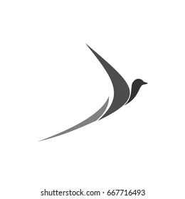

<nav class="bg-white shadow-lg h-[100px]">
  <div class="max-w-7xl mx-auto px-4 sm:px-6 lg:px-8">
    <div class="flex justify-between h-16">
      <div class="flex">
        <!-- Logo o título del navbar -->
        <div class="flex-shrink-0 flex items-center">
          
        </div>
        <!-- Otras opciones de navegación -->
        <div class="hidden sm:-my-px sm:ml-6 sm:flex sm:space-x-4">
          <a
            class="inline-flex items-center px-1 pt-1 border-b-2 border-transparent text-sm font-medium leading-5 text-gray-500 hover:text-gray-700 hover:border-gray-300 focus:outline-none focus:text-gray-700 focus:border-gray-300 transition duration-150 ease-in-out"
            href="#">Inicio</a>
          <a
            class="inline-flex items-center px-1 pt-1 border-b-2 border-transparent text-sm font-medium leading-5 text-gray-500 hover:text-gray-700 hover:border-gray-300 focus:outline-none focus:text-gray-700 focus:border-gray-300 transition duration-150 ease-in-out"
            href="#">Acerca
            de</a>
          <!-- Agrega más opciones de navegación aquí -->
        </div>
      </div>
      <!-- Botón de inicio de sesión o menú desplegable -->
      <div class="hidden sm:ml-6 sm:flex sm:items-center">
        <button
          class="bg-blue-500 hover:bg-blue-700 text-white font-bold py-2 px-4 rounded focus:outline-none focus:shadow-outline">
          Iniciar sesión
        </button>
      </div>
    </div>
  </div>
</nav>
